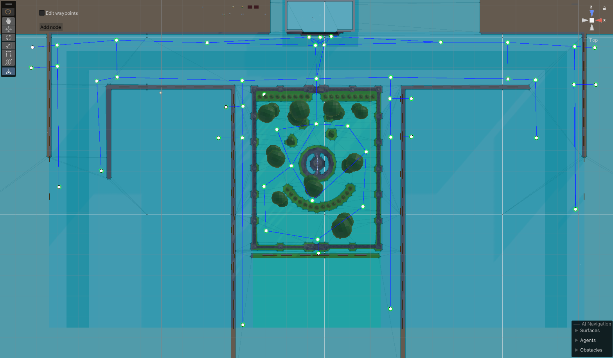
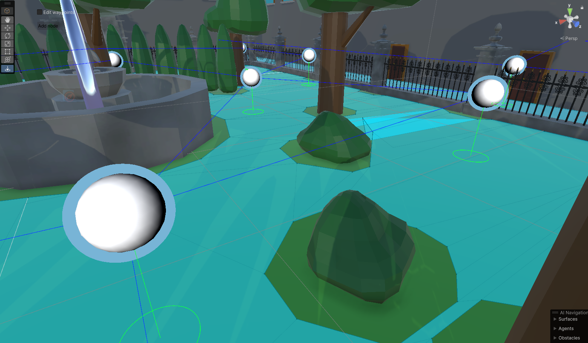
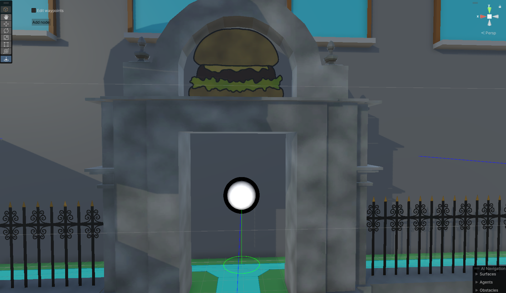
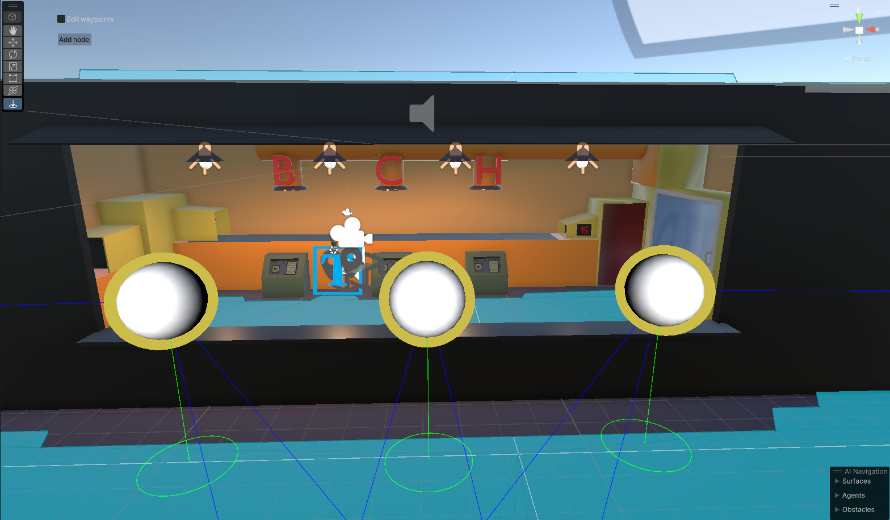
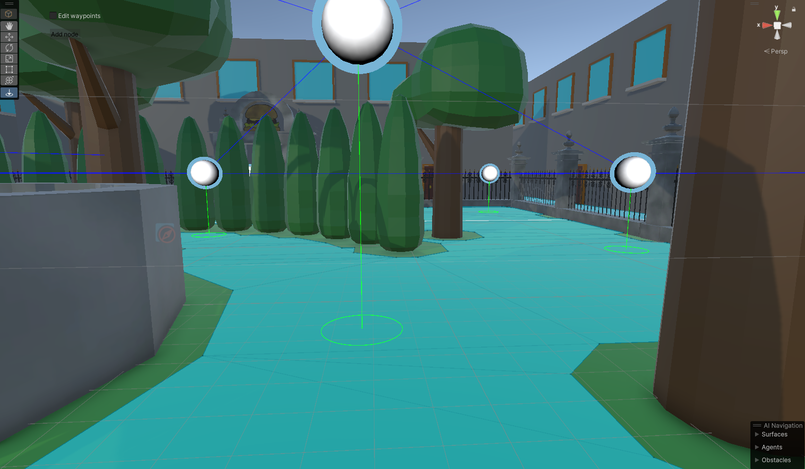
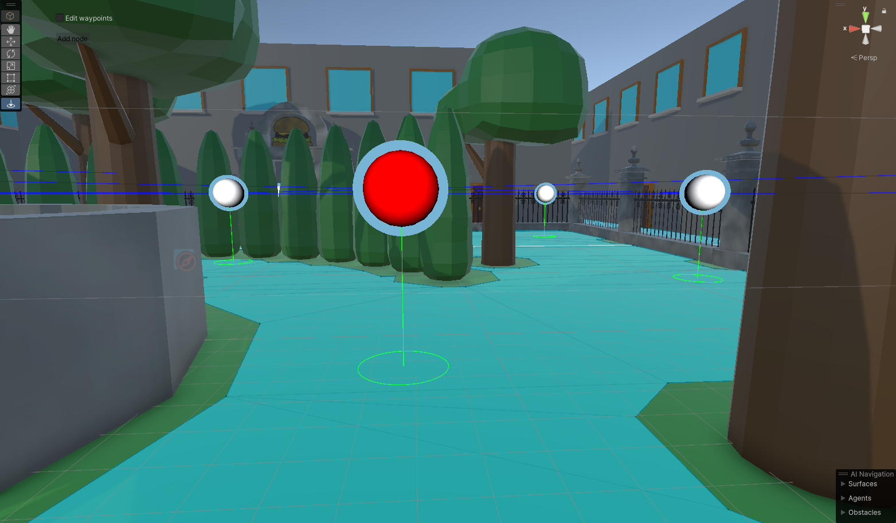
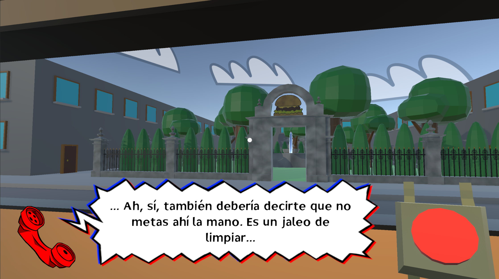

Burgetton


Project information
- Category: Gamejam project
- Project date: 2024
- Project URLs: Itchio
My roles in the game
Burgetton was developed for Virtual Core Jam with the theme "Only one button".
I did all the character interactions and movement, the dialogue and localization systems, the mini-game and the client path-finding. I also designed and implemented both the menu and the scoring. Lastly, I wrote the dialogue and translations, and composed a piece for the old menu.
Side note
Burgetton was originally made for a gamejam, and therefore had flaws that could not be solved in time. Recently, I came back and fixed some of these, namely the menu, the lack of localization, and how empty it felt.
THE PROGRAMING
Minigame
Perhaps one of the most interesting aspects of Burgetton, for me, is the minigame. Gameplay-wise it's very simple, you just connect the wires with the right colours. But on the programming side, we needed a somewhat realistic cable simulation to go with it. Since this was a gamejam there was no time to implement a physics simulation (not to mention it would've been an overkill). Therefore, I decided to implement it as a parametrized cosine function.
The menu emulates a book. It uses an animator that changes to the specified page through an animation parameter. This is useful to move to open at specific pages, such as not opening the main menu during gameplay.
For the dialogue, I wrote a dialogue system that takes in a list of text and can call functions with each dialogue entry. In the final game this feature is only used to start the game after the last line.
I implemented the localization with Unity's own localization system.
Tools and client movement
In Burgetton, clients move from and to the truck from random parts of the ‘city’.
In order to keep the client movement organic, I created a graph that maps the city, and a custom unity tool
to easily manage it. The food truck can have up to 3 clients at once. When one leaves, another one
spawns out of sight and uses the graph to look for a path to the truck. Since the path is meant to be kept
organic, the client looks for the shortest path with a bit of randomness added. The client that exits the
truck also finds a path, but to a designed exit node. Once a path is chosen, the client uses Unity’s pathfinding
to visit, in order, each of the nodes of the path. This is useful to avoid obstacles on the path, such as other clients.
The custom graph tool was made with ease of use, simplicity and speed in mind. Connecting or disconnecting 2 nodes is as easy as selecting 2 of them with the pointer and pressing C (connect) or B (break) in your keyboard. The tool has an option to enable or disable directional gizmos to avoid unnecessary clutter.

On the visual side, each node type has a colour coded halo around it; Blue means normal, black is an exit node, and yellow means it’s a food-truck node. Unselected nodes will be white on the inside and selected ones, red.





THE ART AND UI
For Burgetton, and most UIs I design, my goal is integrating it diegetically with the game as much as possible, to maximise immersion and make it memorable.Game menu
Original game-jam game featured a simple but rushed menu. I changed it into an in-game menu, mimicking a restaurant menu, playing with the double meaning of the word.


It consists of a small booklet with different pages for game title, main menu, options and credits. The player can use the corresponding buttons to move to specific sections, or manually change pages, clicking on the pages' borders. During gameplay, the booklet is locked to the settings menu.
Especial care has been put into each section to make it look out of a real menu. It has fingerprints that change how light reflects on it, and it’s physically opened/closed when used.
Lives
Instead of traditional lives, I opted for a diegetic in-game alternative, showing them as a restaurant reviews. To that end, I parodied a business reviewing platform, most specifically TripAdvisor, changing the iconic owl to a cat.
3D art
In the original game, the food-truck lived in a barren grey wasteland. Since the player is expected to be looking out of the window for half of the game, I added a park for visual flare, and building facades to stop view-lines and extra immersion. I kept a simple style, similar to the one that already existed for the food-truck interior.
Music
I composed a piece for the original main menu, but it got removed alongside it.
Writing and localising
I wrote the introductory monologue that your boss gives you at the start of the game, as a tutorial. For the game’s update, I also localised said monologue, and all the texts, to English.
